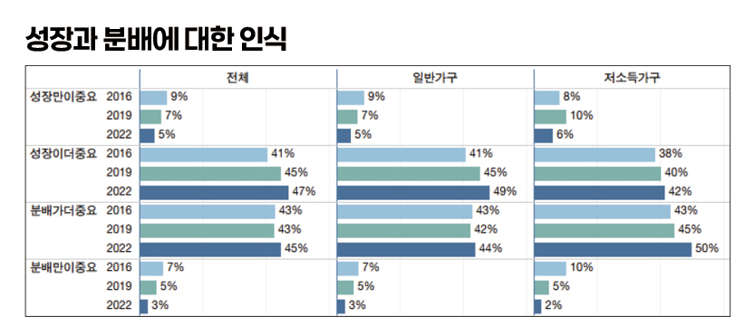

박영삼의 통계로 보는 노동
올바른 복지재원 마련 ‘부자 증세’ 35%, ‘국민 모두’ 32%
복지패널 부가조사 원자료(2016~2022) 분석 … 인식 격차 줄었지만 소득계층 이해는 분명
지난달 7일 한국복지패널 원자료가 일반에 공개됐다. 복지패널은 한국노동연구원의 노동패널과 함께 우리나라의 대표적인 패널조사로 보건사회연구원과 서울대 사회복지연구소가 2006년부터 구축해 오고 있다. 빈곤층 실태를 충실하게 파악하고 정부의 복지정책 수립에 활용하기 위해 저소득층 표본가구를 조사대상에 충분히 포함하면서 가중치를 부여해 전체 가구를 대표하도록 하고 있다.
이번에 발표된 17차 조사는 지난해 3월부터 7월까지 실시된 것으로 모두 8천169가구 조사가 완료된 것으로 보고됐다. 보건사회연구원은 해마다 이 자료를 공개하면서 해당 연도의 조사결과 기초분석보고서를 발간하는데, 최근 ‘복지인식 부가조사’ 결과를 다룬 언론보도들이 주목을 끌었다.
주요한 내용으로는 성장과 분배 가운데 어느 것이 더 중요하냐는 질문에 성장이 중요하다는 의견이 52%, 분배가 더 중요하다는 의견이 48%로 성장 쪽이 약간 우세했다. 경제를 살리기 위해 세금을 줄여야 한다는 의견에는 동의(35%)가 반대(26%)보다 많았으나 중립(39%) 의견이 가장 많았다. 반대로 복지를 위해 세금을 늘려야 한다는 입장에 대해서도 찬성(32%)이 반대(31%)를 근소하게 앞섰지만 가장 높은 비율은 중립(37%) 의견이 차지했다.
2016·2019·2022년 부가조사 분석
동일 가구 패널조사로 인식 변화 추적
그런데 패널조사는 동일한 가구와 가구원을 대상으로 반복적으로 추적조사를 하는 것이기 때문에 한 해의 조사결과만 보기보다는 과거 조사결과와 비교해 보는 것이 필요하다. 그리고 이것이 패널조사의 장점이기도 하다. 복지패널의 복지인식 부가조사는 3년마다 실시하고 있다. 2022년 부가조사는 2016·2019년 부가조사 대상에 포함됐던 5천996가구의 가구원 2천829명을 대상으로 최종 완료됐다. 이에 복지패널 원자료를 가지고 가장 최근의 3차례에 걸친 복지인식 부가조사 결과를 분석하고 어떤 변화가 있었는지 그 흐름을 추적해 봤다.
우선 성장과 분배에 대해서 어느 것이 더 중요한지에 대한 응답은 2013년 조사에서는 50:50으로 동일했던 것이 2019년에 52:48로 성장 쪽으로 약간 기울었고, 2022년에도 그대로 유지됐다. 일반가구와 저소득가구(균등화중위소득의 60%이하 가구)로 구분해서 보면, 같은 기간 두 그룹 모두 성장만이 중요하다거나 분배만이 중요하다는 응답은 감소하고 성장이나 분배가 상대적으로 중요하다는 중간 의견 쪽으로 이동한 것으로 나타난다. 대신 저소득가구에서는 분배가 상대적으로 더 중요하다는 의견이 43%에서 50%로 늘어난 반면, 일반가구에서 성장이 더 중요하다는 입장이 41%에서 49%로 크게 강화된 것으로 나타난다.

성장vs분배 의견차 줄고, 증세·감세 반대의견 동시 감소
사회복지를 확대하려면 세금을 더 거둬야 한다는 의견에 대해서는 찬성 비율이 크게 달라지지는 않았으나(32%→33%→31%), 반대 비율이 다소 줄어든 것(35%→33%→31%)으로 나타났다. 이러한 증세 반대 의견 약화는 저소득가구와 일반가구에 공통적으로 나타났다.
한편 경제를 살리기 위해서는 세금을 줄여야 한다는 정반대 의견에 대한 응답도 크게 다르지는 않았다. 동의 비율이 30% 초·중반을 횡보하는(33%→37%→35%) 모습을 보이는 가운데 반대 비율이 약간 감소하는 양상을 보였다. 증세도 감세도 적당한 수준에서 중간 의견이 지배하고 있는 상황이다.
통계적으로 유의한 차이와 변화를 보인 항목은 보편복지와 선별복지에 대한 의견을 묻는 항목이었다. 국가가 복지정책을 펼 때 모든 국민을 대상으로 하는 방안과 가난한 사람만을 대상으로 하는 방안 중 어떤 것이 옳으냐는 질문에 대해 ‘모든 국민’을 대상으로 하는 방안이 옳다는 의견이 2016년 21%에서 2022년에는 30%로 크게 증가했다. 대신 가난한 사람들만을 대상으로 하는 것이 옳다는 의견은 79%에서 70% 수준으로 줄어들었다. 세부적으로는 2016년 가장 큰 비중을 차지했던 ‘소득하위 50%’와 ‘소득하위 30%’ 대상이 옳다는 의견은 각각 2%포인트(27%→25%), 4%포인트(22%→18%) 줄었다. ’소득하위 70%’까지 대상으로 해야 한다는 의견만 15%에서 19%에서 늘었다. 복지대상을 대체로 넓혀야 한다는 쪽으로 의견이 이동한 것이다.
저소득층은 “빈곤층 지원집중” 일반가구는 “모든 국민 지원”
하지만 이것은 일반 가구가 다수를 차지하는 상황을 반영하는 것일 뿐 저소득 가구의 경우에는 전 국민 대상 복지가 옳다는 의견이 2016년 15%에서 2019년 26%로 크게 늘었다가 2022년에 오히려 17% 수준으로 크게 줄어들었다. 소득하위 50%(25%→34%)와 소득하위 70%(11%→18%) 대상이 옳다는 의견이 강화된 것으로 나타난다. 이것은 문재인 정부 시기 기초생활보장이나 근로장려세제의 확대나 코로나 위기 당시 정부지원금 지급 등의 복지수급 경험이 반영된 것으로 보인다. 일반가구에서는 동일한 경험을 해도 복지혜택이 일부에게만 가서는 안 된다는 인식을 갖게 된 반면, 저소득가구는 어려운 사람들에게 좀 더 두텁게 지원해 주는 것이 옳다고 느끼게 된 것으로 이해된다.
그렇다면 정작 복지에 필요한 재원의 조달에 대해서는 어떤 의견들을 가지고 있고 변화는 어땠을까? 이번 2022년 조사에서 고소득층의 세금 부담이 낮다는 의견은 59%에 달했다. 상당한 국민이 고소득층이 제대로 세금을 내지 않고 있다고 보는 것이다. 하지만 2016년에는 이 의견이 82%에 달했을 정도였으니 많이 완화한 것이다. 반면 중간층의 세금 부담이 낮다는 응답은 6년 전 17%에서 8% 수준으로 줄어들었으며, 저소득층의 세금 부담이 낮다는 의견은 8%에서 12%로 오히려 늘었다. 소득계층에 따른 조세부담 정도에 대한 인식차이가 있지만 한편으로는 그 차이가 좁혀지고 있는 측면을 보여준다. 이와 관련해서 복지패널 부가조사에서는 “노인, 아동, 장애인 등을 위한 복지재원을 어떻게 마련하는 것이 가장 바람직한가”라고 물었는데 2016년에는 부자(44%), 기업(22%), 모든 국민(21%) 순이었다. 그러나 2022년에는 부자(35%), 모든 국민(32%), 기업(23%) 순으로 바뀌었다. 수혜자 부담으로 해결해야 한다는 응답은 9%에서 6%로 줄었다.
“국민 모두가 부담해야” 10%p 늘어…상위 20% 부담 회피 경향도 커져
이 항목의 경우 소득분위에 따른 차이가 큰 것으로 나타났다. 상위 20%에 해당하는 5분위 가구원들은 부자들의 세금으로 조달해야 한다는 의견이 대폭 줄고(41%→30%) 국민 모두의 세금으로 해결해야 한다는 응답이 2배(21%→41%) 가까이 늘었다. 4분위 이하의 가구원들은 모든 국민의 부담으로 해결해야 한다는 응답이 약 10% 정도는 늘어난 것으로 나타났다. 다만 기업들의 세금으로 마련해야 한다는 응답 비율은 크게 변화가 없었다.
복지패널 부가조사 결과는 복합적인 사실을 말해 준다. 6년 전에 비해 고소득층과 저소득층의 복지인식에 간극이 줄어든 측면도 있지만 일부에서는 방향이 더 벌어진 것도 있다.
성장이나 분배 어느 한 쪽만 중요하다는가, 복지에 필요한 재원을 특정 계층의 부담으로 모두 해결해야 한다든가 하는 문제에 관한 견해는 계층 간 차이가 크게 줄어든 것으로 나타난다. 양극단의 사고는 피하고 중도에 가까운 인식변화를 보이고 있는 것이 눈에 띈다. 부담·수혜의 대상과 범위를 좀 더 넓고 고르게 하는 것이 좋다는 흐름이 읽혀진다.
하지만 여전히 차이가 크고 변화 방향이 완전히 다른 대목도 확인할 수 있다. 가난한 사람은 정부의 역할과 분배의 중요성이 더 커졌다고 보고 있고 더 어렵고 힘든 사람들을 제대로 도와야 한다고 생각하는 반면, 고소득층은 자신들의 부담이 더 무거워지는 것을 피하고자 한다. 이것은 문재인 정부 시기 복지 확대와 더불어 코로나 위기 극복 과정에서의 복지경험을 통해 얻은 각자의 교훈이기도 하고, 앞으로 발생할 수 있는 잠재된 갈등 요소이기도 하다.
고려대 노동문제연구소 노동데이터센터장 (youngsampk@gmail.com)